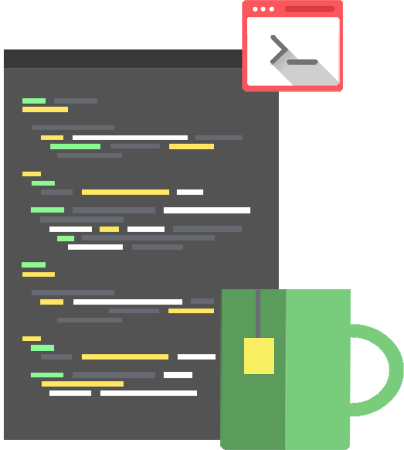

What is GitHub?
GitHub is a web-based Git repository hosting service. It offers all of the distributed version control and source code management (SCM) functionality of Git as well as adding its own features. It provides access control and several collaboration features such as bug tracking, feature requests, task management, and wikis for every project.

Software Development
Language and scripts
Python
C++
C
Java
In software engineering, a software development methodology (also known as a system development methodology, software development life cycle, software development process, software process) is a splitting of software development work into distinct phases (or stages) containing activities with the intent of better planning and management
Web Development
Language and scripts
HTML, CSS
JavaScript, Jquery, Node.js
Django
Web development is a broad term for the work involved in developing a web site for the Internet (World Wide Web) or an intranet (a private network). Web development can range from developing the simplest static single page of plain text to the most complex web-based internet applications, electronic businesses, and social network services.